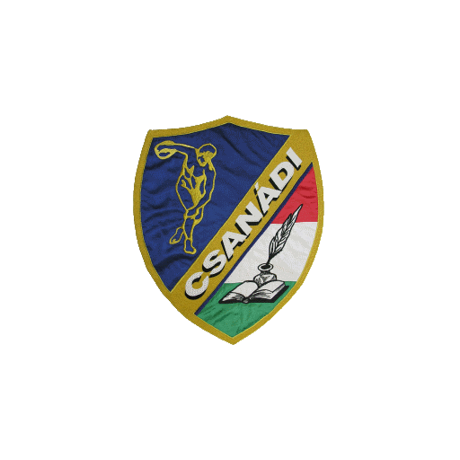

Ugrás a tartalomra

CSANÁDI
ÁRPÁD SPORTISKOLA
SPORT
TUDÁS
KÖZÖSSÉG
KRÉTA belépés ↗
Automatikus
↗
Kapunyitás újra
✦
Felfedezés
☰
CSANÁDI 2026 · NAVIGÁCIÓ
Fedezd fel az iskolát
Válassz a körökön: főtémakör, almenü és részletes oldal.
Bezárás
×
1
Hat fő témakör
2
Kapcsolódó almenük
3
Részletes oldalak
CSANÁDI
Kezdőoldal
Dokumentumtár
Felvételi
Kapcsolat
Betöltés…
A tartalmak betöltése…
KERESŐKÖZPONT
Mit szeretnél megtalálni?
✕
Keresés az oldalak között
Az oldalak között kereshetsz.
ESC